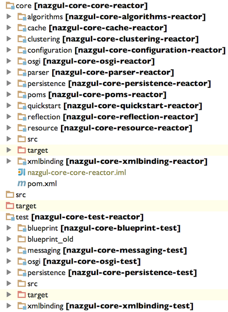

Nazgul Core reactor and projects
Nazgul Core is a reactor defining library-style building blocks and non-domain Nazgul Software Components, for general use in all types of projects. Most of these components are completely standalone, which means that they do not depend on other components from the Nazgul Core reactor. (Understandably, implementation projects depend on their Model and API projects, respectively, but most other projects do not have inter-dependencies).
The core components
 The components are described in more detail in their respective projects; and defined below the core directory, as illustrated in the image to the right. All components are fully OSGi compliant.
The core components are:
-
nazgul-core-algorithms. Contains several projects holding classes and methods wrapping generic-use algorithms for functional programming in java, as well as simplifying creating standalone applications (“executable JARs”), and modeling data in Tree structures.
-
nazgul-core-cache. The nazgul-core-cache reactor contains API and several implementation projects defining generic-use algorithms for working with caches. In this context, a cache can be standalone or distributed (i.e. clustered). The complexities of managing data in distributed caches are, however, hidden from users by the cache API.
-
nazgul-core-clustering. The nazgul-core-clustering reactor contains an API for defining classes whose objects should be clusterable, implying that they can be distributed in clustered environments or distributed caches.
-
nazgul-core-jmx. The nazgul-core-jmx reactor contains an API and test project for defining classes which should work smoothly with JMX. This is useable for service development and management during operations in most Java EE-compliant application servers.
-
nazgul-core-osgi. Holds a launcher API and a corresponding implementation project to embed an OSGi container within a Java SE (or Java EE) application, as well as a means to subscribe and listen to OSGi-originated events.
-
nazgul-core-parser. Contains a specification and extensible implementation of a TokenParser, as well as a system of pluggable ParserAgents to facilitate creating simple but powerful parsers to substitute tokens within a stream (or text) with statically or dynamically generated data.
-
nazgul-core-persistence. Hosts a wrapper API for JPA2 methods to simplify interaction and setup of entity projects holding annotated entities. For instance, shields the user from having to handle a slew of unmanaged Exceptions. Also defines a top model project holding all Entity parent types, notably the NazgulEntity type.
-
nazgul-core-poms. Reactor holding all parent poms used for different projects within the Nazgul Core reactor, except the parent for reactor poms themselves. Each separate project type (such as model projects) requiring a separate - but shared - configuration should define a separate parent pom here.
-
nazgul-core-quickstart. Nazgul Software Component for integrating with tools such as Maven Archetype Plugin or JBoss Forge - both of which can use the Quickstart analyzer and generator classes to validate existing project structures, as well as generate software projects complying with the Nazgul Framework’s patterns.
-
nazgul-core-reflection. Defines an API with tools assisting in type conversion, serialization and deserialization and extracting dependencies or type data in runtime.
-
nazgul-core-resource. Defines an API and implementation for managing and reading localizable resources, as well as an improved ResourceBundle implementation capable of handling UTF-8-encoded data for this purpose. (The JDK-based ResourceBundle implementation requires resource definitions to be supplied in ISO8859-1 encoding, which can be a pain for localizations not using a western latin alphabet.
-
nazgul-core-xmlbinding. The nazgul-core-xmlbinding holds an API and SPI for simplifying marshalling and unmarshalling Java Object graphs to XML. In the case of JAXB, the classes applicable are assumed to be either annotated with JAXB annotations or converted by an supplied type converter implementation.
The test components
Some parts of the Nazgul Core reactor defines dependencies which can be re-used in test scope of other projects. These projects are defined below the test directory, as illustrated in the image to the right.
The test-scope dependencies are shown below:
-
nazgul-core-blueprint-test. Contains classes and methods simplifying blueprint-based OSGi tests. The project contains utilities required by jUnit-based tests using blueprint.
-
nazgul-core-messaging-test. Holds abstract superclasses and utilities simplifying creating unit tests containing JMS message brokers, with explicit implementations for ActiveMQ and HornetQ.
-
nazgul-core-osgi-test. Holds mock implementations of commonly used OSGi types, to simplify creating automated tests for OSGi components relying on particular data in their surroundings. Focus here is simplicity for developers, not OSGi completeness.
-
nazgul-core-persistence-test. Contains classes simplifying JPA-based tests for several JPA providers. Optionally delegating setup and validation of database data to dbUnit implementations. Also providing a standard setup/process to execute jpa-based tests.
-
nazgul-core-xmlbinding-test. Contains utility methods to simplify testing and validating XML and XML-based tests, including calculating and visualizing diffs for XML trees.